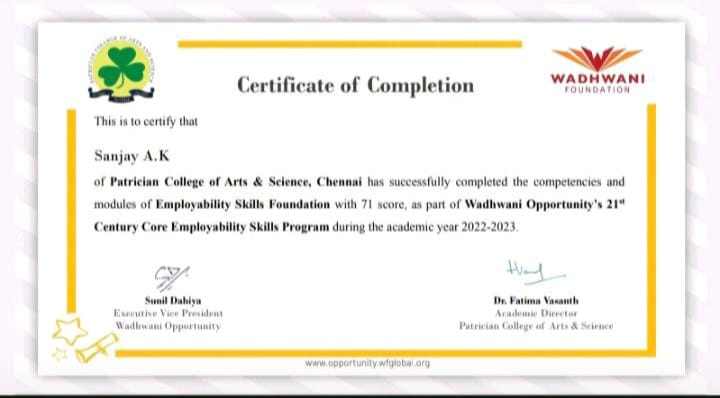
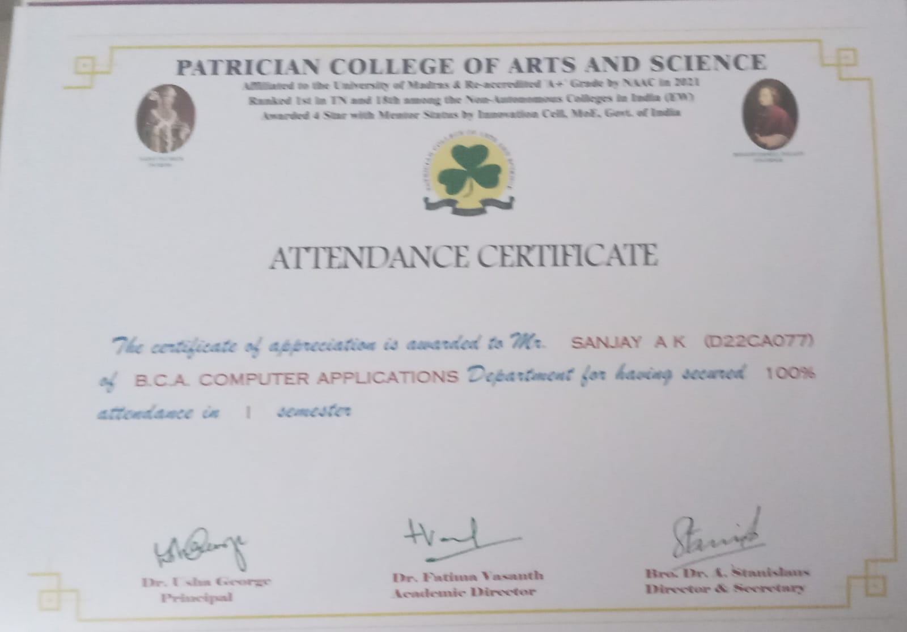

Certifications

IoT Certificate
Data Science with Power BI – NoviTech

Cybersecurity Fundamentals – IBM

Voice of Security – IBM

Employability Skills Foundation – Wadhwani
Achievements

100% Attendance – First Semester

I presented my project titled "Student Examination Seating Arrangement" at the International Conference on Future Computing – Navigation Through the Age of Intelligent Systems, organized by Patrician College of Arts and Science in association with the ICT Academy, held on March 14, 2025.